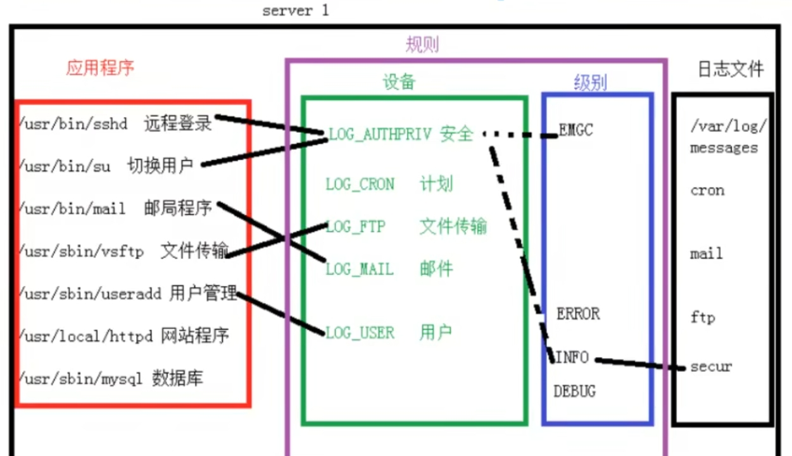

Linux常用命令（三）
取别名
alias ls = 'ls -l' #给ls起别名，输入ls 相当于 ls -l |
统计
cat 1.txt | wc -l #-l统计行数 |
下载软件包
wget -O /etc/yum.repos.d/epel.repo https://mirrors.aliyun.com/repo/epel-7.repo #-O 指定下载目录 |
文件查找
- 简介
- which：命令查找
- whereis：命令查找，同上
- find：文件查找，针对文件名
- locate：文件查找，依赖数据库
- 实例
- which/whereis
which ls #依赖PATH环境变量查找命令
[root@localhost ~]# which ls
alias ls='ls --color=auto'
/usr/bin/ls
whereis ls
[root@localhost ~]# whereis ls
ls: /usr/bin/ls /usr/share/man/man1/ls.1.gz - locate
locate 88888.txt #找不到，需要重启系统因为文件是我刚创建
updatedb #更新数据库
locate 88888.txt - find
语法：find [path] [options] [expression] [action]
语法：命令 路径 选项 表达式 动作find /etc -name a.txt
命令 路径 选项 表达式
find /etc -name hosts
find /etc -iname HOSTS #-i 忽略大小写
find /etc -iname hos* #*表示后面的都行，以hos开头就行
find /etc -size +5M # -size 以大小来查找，查找大于5M的文件
find /etc -size 5M # -size 以大小来查找，查找等于5M的文件
find /etc -size -5M # -size 以大小来查找，查找小于5M的文件
[root@localhost ~]# find /etc -size +5M
/etc/udev/hwdb.bin
[root@localhost ~]# ls -h -l /etc/udev/hwdb.bin #-h 人性化显示
-r--r--r--. 1 root root 8.5M Apr 9 13:38 /etc/udev/hwdb.bin
按目录深度查找
-maxdepth #按目录深度查找
-a #表示and
find / -maxdepth 3 -a -name ifcfg* #在/下的3级目录查找名字以ifcfg开头的
[root@localhost ~]# find / -maxdepth 4 -a -name ifcfg*
/etc/sysconfig/network-scripts/ifcfg-lo
/etc/sysconfig/network-scripts/ifcfg-enp0s3
按属主，属组查找
find /home -user jack #-user 按属主找
find /home -group jack #-user 按属组找
按文件类型查找
find /dev -type b #-type按文件类型查找，
find /dev -type f # f为普通文件
按文件权限查找
find / -perm 714 -ls# 查看以714为权限的文件 -perm就是按权限 -ls就是动作，功能就是 ls -l
[root@localhost ~]# find . -perm 714 -ls
33574996 0 -rwx--xr-- 1 root root 0 Apr 10 10:22 ./1.txt
后处理的动作
-print #打印，默认就是-print
-delete #删除
find . -perm 714 -delete #找到后删除
find /etc/ -name ifcfg* -ok cp -rvf {} /tmp \;
-ok 表示后面接参数
{}表示前面找到的内容
-rvf强制递归复制，并显示
\; #表示语句结束
文件打包压缩
- 简介
tar命令是unix/linux系统中备份文件的可靠方法，几乎可以工作于任何环境中，它的使用权限是所有用户，建议针对目录 - 打包
语法： tar 选项 包名 需要打包的文件或文件夹
语法：tar -cf etc.tar /etctar -cf etc.tar /etc # -c(create)压缩, -f(file) -f指定文件名 一定要放到末尾
tar -czf etc-gzip.tar.gz /etc # -z 利用gzip工具进行压缩
tar -czvf etc-gzip.tar.gz /etc # -z 利用gzip工具进行压缩，-v可视化
-rw-r--r--. 1 root root 10M Apr 10 11:04 etc-gzip.tar.gz
-rw-r--r--. 1 root root 29M Apr 10 11:01 etc.tar
上述两个的文件大小不一样
-z 用gzip压缩
-j 用bzip2进行压缩.tar.bz
-J 用xzip进行压缩.tar.xz
由上往下体积越来越小，但是压缩时间越来越长 - 解压
tar -xvf etc-gzip.tar.gz #解压所有的都可以用这个
tar -xzvf etc-gzip.tar.gz #解压缩 -z利用gzip工具进行解压缩 -x表示解压 -v表示可视 -f指定文件名
tar -xvf etc-gzip.tar.gz -C /tmp #解压到tmp，-C指定路径
软件管理
RPM包
- 概述
- RPM Package Manager （原Red HatPackage Manager，现在是一个递归缩写）
- 由Red Hat 公司提出，被众多Linux发行版本所采用
- 为二进制（binary code）无需编译，可以直接使用
- 无法个人设置，开关功能
- 软件包实例（注意后缀）：mysql-community-common-5.7-12-1.el7.x86_64.rpm，软件+组件+版本+后缀
- 认识RPM包
- zip-3.0-11.el7.x86_64.rpm
- 软件名：zip
- 版本号：3.0-11
- 发布版本（Release8/6/7）：el7，Enterprise Linux7的缩写
- 系统平台(32/64)：x86_64
- 文件后缀：rpm
源码包
- 概述
- source code 需要通过GCC，C++编译环境编译才可以运行
- 可以个人设置，开关功能，配置操作复杂
- 软件包实例：nginx-1.8.1.tar.gz
- 认识源码包
- nginx：软件名
- 1.8.1：版本
- tar.gz：压缩
RPM包管理
yum工具
- 简介
- yum 全称Yellow dog Updater Modifited
- 是一个在Fedora和RedHat以及centos中的shell前段软件管理器
- 基于RPM包管理，能够从指定的服务器自动下载RPM包并安装
- 可以自动处理依赖关系，并且一次安装所有依赖的软件包，无需繁琐的一个一个安装。
- yum本地源：系统安装的光盘（去哪里下载）
- 目的：告诉系统去哪里下载软件，通过系统光盘获得软件包，并安装软件
- 观察yum核心配置目录:/etc/yum.repos.d/
[root@localhost ~]# ls /etc/yum.repos.d/
CentOS-Base.repo CentOS-fasttrack.repo CentOS-Vault.repo
CentOS-CR.repo CentOS-Media.repo CentOS-x86_64-kernel.repo
CentOS-Debuginfo.repo CentOS-Sources.repo - 备份官方源，并删除
rm -rf /etc/yum.repos.d/*
- 编写本地yum库配置文件
vim /etc/yum.repos.d/dvd.repo #名字自己随便取一定要用.repo的后缀名
[dvd] #某一个库的名称，可随便取，中括号[]必须
name=dvd #库的名称的说明，可随便取，name是必须的
baseurl=file:///mnt/cdrom #下载库的具体地址，重要，前//是网页的格式，/mnt指得在在自己的/mnt目录
gpgcheck=0 #是否进行gpg检查，为0表示不需要验证，为1表示需要验证
enable = 0# 表示这个库不能用，等于1表示可以用，默认为1 - 挂载安装光盘
记得把光盘通电插到电脑上
mkdir /mnt/cdrom
mount /dev/cdrom /mnt/cdrom #把光驱挂载到/mnt/cdrom - 使用yum安装和卸载程序
yum -y install httpd #安装httpd -y 所有都回答yes
systemctl start httpd
systemctl stop firewalld #关闭防火墙
systemctl disable firewalld #禁用防火墙，开机不启动 - 使用yum管理rpm包
安装
yum -y install httpd vsftpd #全新安装
yum -y reinstall httpd vsftpd #重新安装
yum -y update httpd vsftpd #更新升级
yum -y update #升级系统
查询
yum list #查询下载的所有包
yum list httpd # 列出下载的包httpd，后面有@表明已经安装，没有@表示没有安装
yum -y remove httpd #卸载软件包 - 编写远程yum库配置文件
- 清理原有的yum配置
rm -rf /etc/yum.repos.d #先保存再清除
- 下载阿里官网配置
wget -O /etc/yum.repos.d/CentOS-Base.repo https://mirrors.aliyun.com/repo/Centos-7.repo #下载基础包
wget -O /etc/yum.repos.d/epel.repo https://mirrors.aliyun.com/repo/epel-7.repo #下载扩展包 - 更新配置
yum clean all && yum makecache
yum clean all 的主要作用是清除所有已下载软件包和元数据（metadata）以及临时文件的缓存
yum makecache的作用是将服务器上的软件包信息缓存到本地，以提高搜索和安装软件的速度 - 查看，下载安装
yum repolist
[root@localhost ~]# yum repolist
Loaded plugins: fastestmirror
Loading mirror speeds from cached hostfile
* base: mirrors.aliyun.com
* extras: mirrors.aliyun.com
* updates: mirrors.aliyun.com
repo id repo name status
base/7/x86_64 CentOS-7 - Base - mirrors.aliyun.com 10,072
epel/x86_64 Extra Packages for Enterprise Linux 7 - x86_64 13,798
extras/7/x86_64 CentOS-7 - Extras - mirrors.aliyun.com 526
updates/7/x86_64 CentOS-7 - Updates - mirrors.aliyun.com 5,802
repolist: 30,198
rpm工具
- 前言
- 管理红帽系统/centos系统，rpm包的基本工具
- yum功能相同
- 安装
rpm -ivh 包名 #需要先下载包，-i 安装，-v 可视化，打印更多信息，-h 打印百分比，和-v配合使用
- 查询
rpm -q wget #查询软件包
- 卸载
rpm -evh 软件包 #先查询，再删除 -e(erase)卸载
源码包管理
- 下载源码包
- 解压
tar -xvzf tengine-3.1.0.tar.gz
- 配置
./configure --user=www --group=www --prefix=/usr/local/nginx #配置文件prefix安装路径
- 编译
make #编译
- 安装
make install #安装
任务计划
定时完成一些任务，在命令上加上时间戳
一次性调度执行(schedule one-time tasks with) at
- 语法格式：at
示例 now + 5min #五分钟后
teatime tomorrow (teatime is 16:00)
noon + 4days #第四天中午
5pm august 3 2029 #
4:00 2024-11-27- 例子
yum -y install at #安装at
systemctl start atd #启动服务
at now +2min
[root@localhost ~]# at now +2min
useradd uuuuu
<EOT> #cirl + D 退出
job 2 at Wed Apr 10 16:29:00 2024
atq #查询结果
[root@localhost ~]# atq
2 Wed Apr 10 16:29:00 2024 a root
循环调度执行(schedule recurring jobs with) cron
- 简介
cron的概念和crontab是不可分割的
crontab是一个命令，常见于unix和linux操作系统中
用于设置周期性被执行的指令
该命令从标准输入设备读取指令，并将其存放于crontab文件中，以供之后读取和执行 - 查看进程状态
yum install cronie -y #安装
systemctl start crond #启动
systemctl status crond #查看状态
ps aux | grep crond #查看进程
[root@localhost etc]# ps aux | grep crond
root 5061 0.1 0.0 126392 1664 ? Ss 17:08 0:00 /usr/sbin/crond -n
crond程序是运行计划任务的根本 - 实例
- 计划任务位置：/var/spool/cron/
- 管理方式
- 创建计划
crontab -e Edit jobs for the current user
crontab -e #进入一个记事本编写任务计划 :wq退出
* * * * * 命令
分 时 日 月 周
分：minute(0-59)
时：hour(0-23)
天：day of month(1-31)
月：month(1-12) 或者 jan，feb，mar，apr
周：day of week(0-6)(sunday=0 or 7) 或者 sun,mon, tue
分 时 日 月 周 命令或者脚本
六个部分用空格隔开
例子
5 1 15 3 * /usr/bin/ls /root #在每年3月15号1点15分执行ls命令
5 1 15 * * ls /usr/bin/ls /root #在每月15号1点15分执行ls命令
0 2 1,4,6 * * ls /usr/bin/ls /root #在每月1,4,6号2点执行ls命令
0 2 5-9 * * ls /usr/bin/ls /root #在每月5-9号2点执行ls命令
* * * * * ls /usr/bin/ls /root #在每分钟执行ls命令
0 * * * * ls /usr/bin/ls /root #在每小时整执行ls命令
0 2 * * 5 ls /usr/bin/ls /root #在每周五2点整执行ls命令 一般不写星期几
0 2 2 6 5 ls /usr/bin/ls /root #6月2号的2点和6月的周五2点都执行，执行5次，取交集
5 1 * * * ls /usr/bin/ls /root #在每天1点15分执行ls命令
*/5 * * * * ls /usr/bin/ls /root #每隔五分钟执行ls命令
[root@localhost ~]# crontab -e
crontab: installing new crontab - 查询计划
crontab -l List the jobs for the current user
管理员可以使用crontab -u username，去管理其他用户的计划任务
crontab -l
[root@localhost ~]# crontab -l
*/5 * * * * ls /usr/bin/ls /root - 删除计划
crontab -r Remove all jobs for the current users
crontab -r #删除
[root@localhost ~]# crontab -l
no crontab for root
日志管理
日志进程rsyslog
- 简介：rsyslog 系统日志管理，关心问题：哪类程序，产生的什么日志，放在什么地方，日志为统计信息，排除错误，日志由应用程序产生
- 处理日志的进程
- 第一类：
- rsyslogd：系统专职日志程序
- 处理大部分日志记录
- 系统操作有关的信息，如登录，程序启动关闭信息，错误信息
- 第二类：
- httd/nginx/mysql：各类应用程序，可以以自己的方式记录日志
- 观察rsyslogd
ps aux | grep rsyslogd #d为deamon 守护进程，守护进程一般不会退出
root 1013 0.0 0.2 216400 4020 ? Ssl 13:53 0:00 /usr/sbin/rsyslogd -n
- 常见的日志文件(系统，进程和应用程序)
tail -10 /var/log/messages #系统主日志文件
Apr 10 19:01:01 localhost systemd: Started Session 15 of user root.
时间 主机名 消息/发生的事情
tail -f /var/log/messages #实时输出文件尾部
tailf /var/log/messages #实时输出文件尾部 同上
tailf /var/log/secure #认证安全
tailf /var/log/yum.log #yum
tailf /var/log/maillog #跟邮件postfix有关
tailf /var/log/cron #crond,at有关产生的日志
tailf /var/log/dmesg #和系统启动有关
tailf /var/log/wtmp #当前登录的用户 w可以查看
[root@localhost ~]# w
22:18:40 up 8:25, 1 user, load average: 0.00, 0.01, 0.05
USER TTY FROM LOGIN@ IDLE JCPU PCPU WHAT
root pts/1 172.16.34.145 17:59 0.00s 0.08s 0.01s w - rsyslogd配置
- 相关程序
- yum install rsyslog logrotate
- 默认已经安装
- 启动程序
systemctl start rsyslog.service
- 相关文件
rpm -ql rsyslog #列出和这个软件相关的文件
rpm -qc rsyslog #列出这个软件的配置文件
[root@localhost ~]# rpm -qc rsyslog
/etc/logrotate.d/syslog #和日志轮转相关的文件
/etc/rsyslog.conf #syslogd的主配置文件，关键
/etc/sysconfig/rsyslog #syslogd的相关文件，定义级别（了解）
主配置文件：一般都会在/ect/程序名.conf - 主配置文件
vim /etc/rsyslog.conf
cron.* /var/log/cron #前面是程序名，.后面是日志的级别，*表示所有的日志都记录，最后是日志存放的路径
- RULES
- RULES：即规则，是一套生成日志，以及储存日志的策略
- 规则由设备+级别+存放位置组成，设备是同一类程序的统一名称
- RULES由FACILITY+LEVEL+FILE组成
- authpriv.* /var/log/secure (SSH信息，认证设备)
- mail.* -/var/log/maillog (发邮件，邮件设备)，这里有个-符号，表示使用异步方式记录，因为日志文件大
- cron.* /var/log/cron (创建计划任务)
- *.info;mail.none;authpriv.none;cron.none /var/log/messages 系统日志排除了邮件，认证和计划日志，;表示并列，.none表示不放日志
- FACILITY和LEVEL
- facility
- 是系统对某种类型的应用程序的定义，如AUTHPRIV是安全事件，CRON是计划任务事件。用来收集同类程序的日志。
- 设备类型
- LOG_SYSLOG：syslogd自身产生的日志
- LOG_AUTHPRIV：安全认证设备
- LOG_CRON：调度设备
- LOG_MAIL：邮件设备
- LOG_USER(default)：用户相关
- LOG_DAEMON：后台进程
- LOG_FTP：文件服务器
- LOG_KERN：kernel messages 内核
- LOG_LPR：打印机设备
- LOG_LOGCAL0 through LOG_LOCAL7：用户自定义设备
- 程序类型实例
- 关于程序和设备的联系问题，程序自身会决定将日志交给哪类设备。如SSH程序会贤者安全认证类设备。这一点由开发者定义。
- grep Facility /etc/ssh/sshd_config
- #SyslogFacility AUTH
- SyslogFacility AUTHPRIV #认证程序
- level级别
- LOG_EMERG：进击，致命，服务无法继续进行，如配置文件丢失
- LOG_ALERT：报警，需要立即处理，如磁盘空间使用95%
- LOG_CRIT：致命行为
- LOG_ERR：错误行为
- LOG_WARNING：警告信息
- LOG_NOTICE：普通，重要的标准信息
- LOG_INFO：标准信息
- LOG_DEBUG：调试信息，拍错所需，一般不建议使用
- 从上往下级别越来越小，信息越来越多
- 其中* 表示所有级别的信息都记录
- LOG_NONE：不放日志
- facility
- 规则示意图

日志轮转logrotate
- 简介
- logrotate日志轮转：程序将大量日志，分割管理，删除旧的日志
- 日志记录了程序运行时的各种信息
- 通过分析日志可以分析用户的行为，记录运动轨迹，查找程序问题
- 可惜磁盘空间有限
- 日志轮转就是黑匣子，记录的信息在重要也只能记录最后一段时间发生的事情
- 为了节省空间和整理方便，日志文件经常需要按时间或大小等维度分成多份，删除时间久远的日志文件
- 工作原理
- 按照配置进行轮转
- 配置文件种类
- 主配置文件：/etc/logrotate.conf(决定每个日志文件如何轮转)
- 子配置文件夹：/etc/logrotate.d/* #自定义配置，方便管理，.d 表示子目录
- 观察主文件和子文件(每装一个软件都会产生一个子配文件)
- [root@localhost ~]# ls /etc/logrotate.conf /etc/logrotate.d/
- /etc/logrotate.conf
- /etc/logrotate.d/:
- bootlog firewalld httpd syslog wpa_supplicant yum
- 配置文件种类
主配置文件介绍
- vim /etc/logrotate.conf
- 全局设置 #优先级低
- weekly 轮转周期，一周轮转
- rotate 4 保留四份
- create 轮转后创造新的日志文件
- #compress 是否压缩
- include /etc/logrotate 包含该目录下的子配置文件，我们可以在子配置文件中进行设置
- /var/log/wtmp { #对某日志文件设置轮转方法，在配置文件中书写日志名和大阔号。可以独立设定该日志的轮转规则，这个优先级高
- monthly #一个月轮转一次
- create 0664 root utmp #轮转后穿件新文件，并设置权限，root是属主，utmp是属组
- minsize 1M #最小达到1M才轮转
- rotate 1 #保留一份
- }
- /var/log/btmp {
- missingok #丢失不提示，不执行，这东西不重要
- monthly
- create 0600 root utmp
- rotate 1
- }
yum日志轮转实例
轮转的目标文件/var/log/yum.log
配置轮转规则
- vim/etc/logrotate.d/yum #安装程序的时候就会在子配置文件里面带上轮转规则
- /var/log/yum.log { #log文件的路径
- missingok #丢失不执行
- #notifempty #空文件不轮转
- #maxsize 30k #达到30k轮转 日期和大小是或的关系
- #yearly #一年一轮转
- daily #一天一转
- rotate 3 #保存三份
- create 0777 root root #设置权限，这里只是示例，用来区别，默认的0644就行了
测试
- 错误示范
- /usr/sbin/logrotate /etc/logrotate.conf #手动轮转
- ls /var/log/yum*
- [root@localhost ~]# ls /var/log/yum*
- /var/log/yum.log
- 没有用，没有达到我们设置的规则
- 正确示范
- date 04151234 #修改时间 月日时分，每个两位
- /usr/sbin/logrotate -s /var/lib/logrotate/logrotate.status /etc/logrotate.conf #-s是时间戳
- ls /var/log/yum* #出现多个文件
- /var/lib/logrotate/logrotate.status #这个文件说明有切过的状态
- 错误示范
参考
本博客所有文章除特别声明外，均采用 CC BY-NC-SA 4.0 许可协议。转载请注明来自 哆啦酱的点心屋！
相关推荐


评论